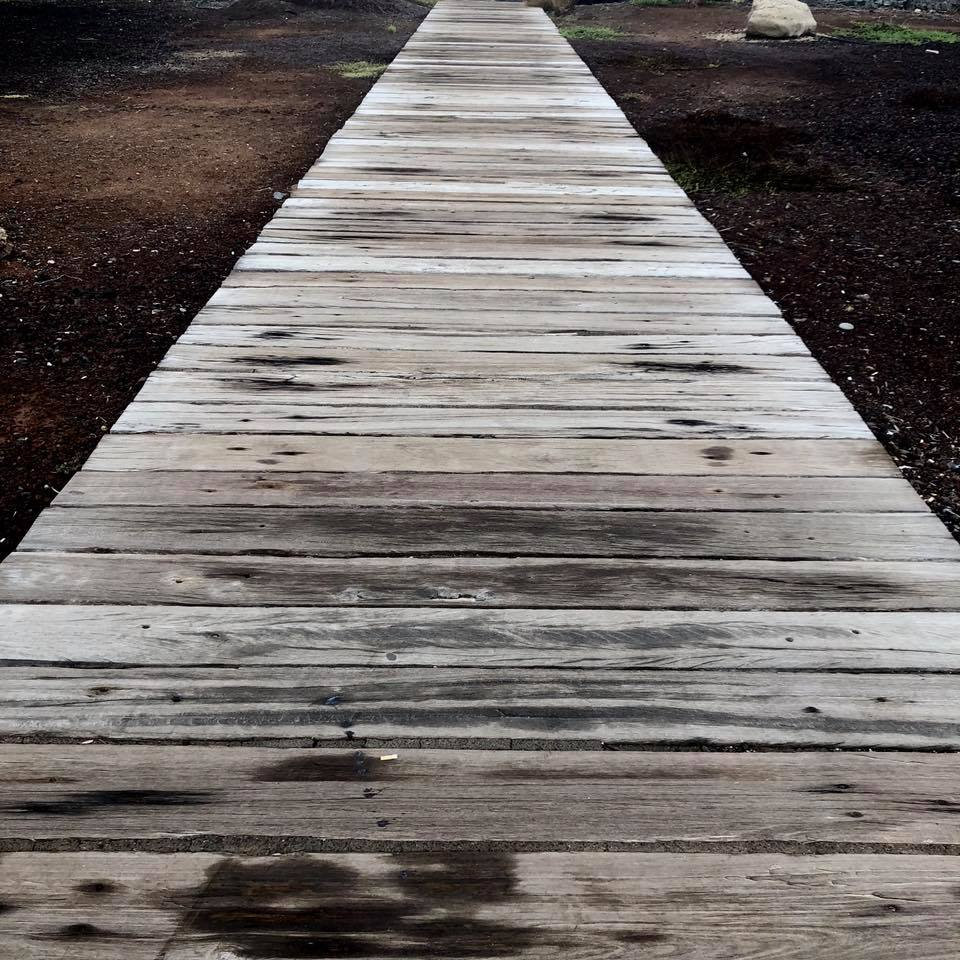

Desarrollado con:



Desde los 17 años tuve mi primer trabajo, y desde entonces he aprendido el valor del esfuerzo y sus
frutos. Tras compatibilizar estudios con trabajo y terminar la carrera de Filosofía, decidí seguir por
el
camino de la investigación y hacer dos máster: Investigación en Filosofía (ULL) y Psicoanálisis y
teoría
de la cultura (UCM).
Mientras seguía trabajando e investigando para una futura tesis,
encontré estabilidad en El Corte Inglés
como vendedor en el departamento de electrónica. Ahí aprendí a
trabajar en una gran empresa, donde
aprendí a coordinar con varios de partamentos para envíos y postventa, así como
con fabricantes y
proveedores. El trabajo en equipo era un pilar fundamental en el día a día, la
cohesión y el apoyo mutuo,
así como la capacidad de comunicar y empatizar con el cliente.
Sin
embargo, debido a la naturaleza del departamento uno de los mayores aprendizajes fue en cuanto a
gestionar problemas con envíos o ventas finalizadas, así como a gestionar la frustración cuando una
incidencia no se resolvía el primer o segundo día.
Más adelante descubrí la programación por
medio de un amigo, lo estuve estudiando por mi cuenta, iniciándome en HTML Y CSS, así como en
JavaScript. Fue una sorpresa para mi cuando me di cuenta de que era un mundo apasionante en el que me
encantaría desarrollarme personal y profesionalmente. Por ello, tomé la decisión de acelerar este
aprendizaje por medio de un Bootcamp, por lo que decidí matricularme en The Bridge, uno de los bootcamp
más famosos y prestigiosos de España. Una vez finalizados los estudios el aprendizaje no para, y cada
día me encuentro frente al Visual Studio escribiendo código, aprendiendo de mis errores y haciendo cada
vez más migas con mi nuevo compañero de trabajo: Google.